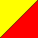

<A [HREF="reference"] [NAME="name"]
[TARGET="target-spec"] [TITLE="title"] >HREF="reference"
Optional: Specifies a destination address for a hyperlink, which must be in URL format.
NAME="name"
Optional: Specifies a named reference within a document. Other pages can then link to this reference within the document by appending a pound sign (#) and the name to the URL for the document.
TARGET="target-spec"
Optional: Specifies a target frame name for the link to be loaded into.
TITLE="title"
Optional: Specifies the title that appears when the hyperlink is selected.
<A HREF="http://www.megatokyo.com">This is a link to the MegaTokyo online comic/manga.</A><P>
<A HREF="http://slashdot.org" TARGET="_blank">This link loads Slashdot into a new window.</A>
<ACRONYM [TITLE="title"] >TITLE="title"
Optional: Specifies an advisory title for the acronym, which may be displayed by the browser via a tip window or other such mechanism.
Sun uses the <ACRONYM TITLE="Java Community Process">JCP</ACRONYM>
(Java Community Process) to determine which enhancements will go into the Java language.
<ADDRESS>
Here's some text.
<ADDRESS>Jabber.com Inc. - support@jabber.com</ADDRESS>
<B>
Some of the text on this line will be <B>rendered in bold face</B> type.
<BIG>
Some of the text on this line will be <BIG>rendered in large</BIG> type.
<BIG>
Season 2 opening monologue:
<BLOCKQUOTE>The Babylon Project was our last, best hope for peace. A self-contained
world five miles long, located in neutral territory. A place of commerce and diplomacy for
a quarter of a million humans and aliens. A shining beacon in space, all alone in the night.
It was the dawn of the Third Age of Mankind, the year the Great War came upon us all. This is
the story of the last of the Babylon stations. The year is 2259. The name of the place is
Babylon 5.</BLOCKQUOTE>
The Babylon Project was our last, best hope for peace. A self-contained world five miles long, located in neutral territory. A place of commerce and diplomacy for a quarter of a million humans and aliens. A shining beacon in space, all alone in the night. It was the dawn of the Third Age of Mankind, the year the Great War came upon us all. This is the story of the last of the Babylon stations. The year is 2259. The name of the place is Babylon 5.
<BR [CLEAR=LEFT|RIGHT|ALL]>CLEAR=LEFT|RIGHT|ALL
Inserts vertical space so that the next text displayed will be past left- or right-aligned "floating" images. The align-type can be LEFT, RIGHT, or ALL.
This line illustrates<BR>a simple line break.<P>
<IMG SRC="htmlref/ref64yr.gif" WIDTH=64 HEIGHT=64 HSPACE=5 ALIGN=LEFT>
A left aligned image.<BR CLEAR=LEFT>
This shows the effect of the CLEAR=LEFT parameter.
This line illustrates
a simple line break.

A left aligned image.<CENTER>
<CENTER>These lines will be centered<BR>
until the CENTER tag is closed.</CENTER>
<CITE>
You can find a reference to that in <CITE>The Cathedral and The Bazaar</CITE>,
by Eric Raymond.
<CODE>
Here's a recursive factorial function in Java:<P>
<CODE>public static long factorial(long n)<BR>
{<BR>
if (n==0)<BR>
return 1;<BR>
else<BR>
return n * factorial(n - 1);<BR>
}<BR></CODE>
public static long factorial(long n)
{
if (n==0)
return 1;
else
return n * factorial(n - 1);
}
<DD>
<DL>
<DT><EM>Anla'shok</EM>
<DD>The secret Minbari fighting force established by Valen after the last war with
the Shadows. The name translates roughly as "Rangers." Valen was the first
leader of this force, or "Ranger One" (<EM>Anla'shok Na</EM>);
this post was filled a thousand years later by Jeffrey Sinclair, and later by Delenn.
<DT><EM>Denn'bok</EM>
<DD>The Minbari fighting pike, nominally a compact cylinder approximately 1 foot
in length, but telescoping out to approximately 5 feet upon command. A standard weapon
of the Rangers.
<DT><EM>Entil'zha</EM>
<DD>One of Valen's titles as leader of the Rangers. The title's meaning is unknown;
it is thought to be of Vorlon origin.
</DL>
<DFN>
XMPP transmits all its messages in <DFN>XML (Extensible
Markup Language),</DFN> which contains plain text with some delimiting codes.
<DIR>
Listing for the directory:<P>
<DIR>
<LI>bin
<LI>etc
<LI>lib
<LI>opt
<LI>usr
<LI>var
</DIR>
<DIV [ALIGN=CENTER|LEFT|RIGHT]>ALIGN=CENTER|LEFT|RIGHT
Specifies the alignment of the lines within this particular division. The align-type can be CENTER, LEFT, or RIGHT.
<DIV ALIGN=CENTER>These lines of text<BR>will be centered.</DIV>
<DIV ALIGN=RIGHT>These lines of text<BR>will be flush right.</DIV>
<DL>
<DL>
<DT><EM>Anla'shok</EM>
<DD>The secret Minbari fighting force established by Valen after the last war with
the Shadows. The name translates roughly as "Rangers." Valen was the first
leader of this force, or "Ranger One" (<EM>Anla'shok Na</EM>);
this post was filled a thousand years later by Jeffrey Sinclair, and later by Delenn.
<DT><EM>Denn'bok</EM>
<DD>The Minbari fighting pike, nominally a compact cylinder approximately 1 foot
in length, but telescoping out to approximately 5 feet upon command. A standard weapon
of the Rangers.
<DT><EM>Entil'zha</EM>
<DD>One of Valen's titles as leader of the Rangers. The title's meaning is unknown;
it is thought to be of Vorlon origin.
</DL>
<DT>
<DL>
<DT><EM>Anla'shok</EM>
<DD>The secret Minbari fighting force established by Valen after the last war with
the Shadows. The name translates roughly as "Rangers." Valen was the first
leader of this force, or "Ranger One" (<EM>Anla'shok Na</EM>);
this post was filled a thousand years later by Jeffrey Sinclair, and later by Delenn.
<DT><EM>Denn'bok</EM>
<DD>The Minbari fighting pike, nominally a compact cylinder approximately 1 foot
in length, but telescoping out to approximately 5 feet upon command. A standard weapon
of the Rangers.
<DT><EM>Entil'zha</EM>
<DD>One of Valen's titles as leader of the Rangers. The title's meaning is unknown;
it is thought to be of Vorlon origin.
</DL>
<EM>
A thing can have as much value from <EM>where</EM> it is as from
<EM>what</EM> it is.
<FONT [SIZE=n] [FACE="name1 [,name2 [...]]" ]
[COLOR="colorvalue"] >SIZE=n
Optional: Specifies a font size between 1 and 7 (7 is largest). A value with a + or - sign in front of it denotes a size relative to the current BASEFONT setting. Relative sizes are not cumulative, so two <FONT SIZE=+1> tags in a row will not increase the size by 2. Default is no change.
FACE="name1 [,name2 [...]]"
Optional: Specifies the font face name to be used. A list of font face names can be specified here; if the font face name specified by name1 is installed on the target system, it will be used, otherwise the font face name specified by name2 will be tried if it is specified, and so on. If none of those fonts are available, the default font (as configured in the browser) will be used. Default is no change.
COLOR="colorvalue"
Optional: Sets the color of the text. colorvalue may either be specified as a hexadecimal color value or as a standard color name. Default is no change. See also Colors.
Comparison of font sizes:<P>
<FONT SIZE=1>Size 1</FONT>
<FONT SIZE=2>Size 2</FONT>
<FONT SIZE=3>Size 3</FONT>
<FONT SIZE=4>Size 4</FONT>
<FONT SIZE=5>Size 5</FONT>
<FONT SIZE=6>Size 6</FONT>
<FONT SIZE=7>Size 7</FONT><P>
<FONT SIZE=5 FACE="Comic Sans MS, Arial, Helvetica" COLOR="green">
This text will be displayed in green Comic Sans MS if you have that font, otherwise either
Arial or Helvetica.</FONT><P>
<FONT SIZE=2 COLOR="#007FFF">A footnote in a cool blue color.</FONT>
&<Hn [ALIGN=LEFT|CENTER|RIGHT] >n
Required: Sets the heading level. Valid values range from 1 to 6 (1 highest-level and usually largest).
ALIGN=CENTER|LEFT|RIGHT
Optional: Specifies the alignment of the header text. Default is LEFT.
<H1>The most general topic</H1>
<H2>A subhead under that general topic</H2>
<H3>And a further subhead under that subhead</H3>
<H4>A further specialization of that subhead</H4>
<H5>A topic even more specific under these subheads</H5>
<H6>The most specialized topic of all</H6>
&<HR [ALIGN=LEFT|CENTER|RIGHT] [COLOR="colorvalue"]
[NOSHADE] [SIZE=n] [WIDTH=n] >[ALIGN=LEFT|CENTER|RIGHT]
Optional: Draws the rule left-aligned, right-aligned, or centered. The default is CENTER.
COLOR="colorvalue"
Optional: Sets the color of the rule. colorvalue may either be specified as a hexadecimal color value or as a standard color name. Default is the standard 3-D color. See also Colors.
NOSHADE
Optional: Draws the rule without 3-D shading.
SIZE=n
Optional: Specifies the height of the rule in pixels.
WIDTH=n
Optional: Specifies the width of the rule, either in pixels, or, if the percent (%) sign is appended to the value, as a percentage of total window width. Default is 100%.
Here's a small line (half the width).<HR WIDTH=50%>
And a tiny green line, off to the right:<HR WIDTH=96 ALIGN=RIGHT COLOR="green" NOSHADE>
<I>
Some of the text on this line will be <I>rendered in italic</I> type.
<IMG SRC="location" [ALIGN=alignoption]
[ALT="text"] [BORDER=n] [HEIGHT=n] [HSPACE=n]
[VSPACE=n] [WIDTH=n] >SRC="location"
Required: Specifies the URL of the picture to be inserted.
ALIGN=alignoption
Optional: Sets the alignment of the image relative to the surrounding text; alignoption may be one of the following values:
ALT="text"
Optional: Specifies text to be displayed in place of the picture if the browser is non-graphical or has images turned off. Some browsers also display this text as a "tooltip" element when the mouse is held over the image.
BORDER=n
Optional: Specifies the size of a border to be drawn around the image. If the image is a hyperlink, the border is drawn in the appropriate hyperlink color. If the image is not a hyperlink, the border is invisible.
HEIGHT=n
Optional: Along with WIDTH=, specifies the size at which the picture is drawn. If the picture's actual dimensions differ from those specified, the picture is stretched to match what's specified.
HSPACE=n
Optional: Along with VSPACE=, specifies margins for the image. Similar to BORDER=, except the margins are not painted with color when the image is a hyperlink.
VSPACE=n
Optional: Along with HSPACE=, specifies margins for the image. Similar to BORDER=, except the margins are not painted with color when the image is a hyperlink.
WIDTH=n
Optional: Along with HEIGHT=, specifies the size at which the picture is drawn. If the picture's actual dimensions differ from those specified, the picture is stretched to match what's specified.
This image is positioned <IMG SRC="htmlref/ref32smi.gif" WIDTH=32 HEIGHT=32 ALIGN=BOTTOM>
with bottom alignment.<P>
This image is positioned <IMG SRC="htmlref/ref32smi.gif" WIDTH=32 HEIGHT=32 ALIGN=TOP>
with top alignment.<P>
This image is positioned <IMG SRC="htmlref/ref32smi.gif" WIDTH=32 HEIGHT=32 ALIGN=MIDDLE>
with middle alignment.<P>
<IMG SRC="htmlref/ref64yr.gif" WIDTH=64 HEIGHT=64 HSPACE=5 ALIGN=LEFT>
This is an image aligned on the left...<P>
<IMG SRC="htmlref/ref64yr.gif" WIDTH=64 HEIGHT=64 HSPACE=5 ALIGN=RIGHT>
This is an image aligned on the right...<BR CLEAR=BOTH>
This image is positioned with top alignment.
This image is positioned with middle alignment.
This is an image aligned on the left...
This is an image aligned on the right...
<KBD>
To begin adding a new user account, enter the command <KBD>vi /etc/passwd</KBD>
at the shell prompt.
<LI [TYPE=order-type] [VALUE=n] >TYPE=order-type
Optional: Specifies a new style for an ordered list. The order-type can be one of these values:
VALUE=n
Optional: Changes the count for an ordered list as it progresses.
Things to get in life:
<UL>
<LI>Good education
<LI>Exact change
<LI>Happiness
<LI>Portable stereo
<LI>Sense of self-worth
<LI>Account on Electric Minds
</UL>
<MENU>
Information about Linux:
<MENU>
<LI><A HREF="http://www.linux.com">Linux.com</A>
<LI><A HREF="http://linuxtoday.com">Linux Today</A>
<LI><A HREF="http://lwn.net">USA Today</A>
<LI><A HREF="http://www.freshmeat.net">Freshmeat</A>
<LI><A HREF="http://slashdot.org">Slashdot</A>
</MENU>
<NOBR>
<NOBR>Here's a line of text I don't want to be broken . . .
there could be an awful lot of text here and it must stay on one line . . .
here's the end of the line.</NOBR>
<OL [START=n] [TYPE=order-type] >START=n
Optional: Specifies a starting index number for the list. The default is 1.
TYPE=order-type
Optional: Specifies a new style for an ordered list. The order-type can be one of these values:
The default is to use Arabic numerals.
<OL>
<LI>Pick up the TV remote control.
<LI>Push the POWER button to turn on the TV.
<LI>Change to channel 3.
<LI>Switch to the VCR remote control.
<LI>Push the POWER button to turn on the VCR.
<LI>Push the TV/VCR button to switch to the VCR input.
<LI>Change to desired channel on the VCR.
<LI>Insert a blank tape into the VCR.
<LI>Press RECORD.
</OL>
<P [ALIGN=LEFT|CENTER|RIGHT] >ALIGN=LEFT|CENTER|RIGHT
Sets the alignment of the paragraph. The align-type can be LEFT, CENTER, or RIGHT. Default is left alignment.
There will be a paragraph break<P>between these two lines.
<P ALIGN=RIGHT>Here's a paragraph that will be flush-right.</P>
And back to normal again.
There will be a paragraph break
between these two lines.
Here's a paragraph that will be flush-right.
And back to normal again.<Q>
<Q>Software is like sex; it's better when it's free.</Q> - Linus Torvalds
Software is like sex; it's better when it's free.- Linus Torvalds
<S>
We have a lot of <S>crazy people</S> unique individuals in the Playground.
<SAMP>
<SAMP>If one-third of a hive of bees flies to a rose bush, one-fifth flies to a daisy,
three times the difference of those two numbers flies to an apple tree, and one bee hovers
attracted by both a jasmine and a tulip, how many bees are there in all?</SAMP>
<SMALL>
Some of the text on this line will be <SMALL>rendered in small</SMALL> type.
<S>
We have a lot of <STRIKE>crazy people</STRIKE> unique individuals in the Playground.
<STRONG>
A thing can have as much value from <STRONG>where</STRONG> it is as from
<STRONG>what</STRONG> it is.